Introduction
We extract distinct but related types of data from the NHANES. The data types are:
demographics: age, sex, educational attainment;
diet: measurements of nutritional status;
physical: blood pressure and physical measurements;
mental health: outcomes from Patient Health Questionnaire-9;
environmental exposures: metals and related environmental toxins.
These are combined into SiMLR for an unsupervised dimensionality reduction. The resulting low-dimensional representations are used for joint prediction of cognitive outcomes. Over 400 subjects with these measurements are available along with environmental exposures.
We predict the variable z_digit_re in NHANES which
refers to the Digit Symbol Substitution Test (DSST), a cognitive
assessment tool. The DSST evaluates processing speed, sustained
attention, and working memory by requiring participants to match symbols
with corresponding numbers under time constraints.
In summary, SiMLR identifies predictors from diet, physical measurements, environmental exposures and mental health that jointly relate to DSST and related variables.
Setup
Load the relevant librarys.
##
## Attaching package: 'ellipse'## The following object is masked from 'package:graphics':
##
## pairs
library(ANTsR)## Warning: replacing previous import 'stats::filter' by 'dplyr::filter' when
## loading 'ANTsR'## ANTsR 0.6.1
## Environment variables set either in .Renviron or with a seed (e.g. XXX):
## Sys.setenv(ANTS_RANDOM_SEED = XXX)
## Sys.setenv(ITK_GLOBAL_DEFAULT_NUMBER_OF_THREADS = 1)
## may influence reproducibility in some methods. See
## https://github.com/ANTsX/ANTs/wiki/antsRegistration-reproducibility-issues
## for more information.Also see *repro methods in antsRegistration.##
## Attaching package: 'ANTsR'## The following objects are masked from 'package:stats':
##
## sd, var## The following objects are masked from 'package:base':
##
## all, any, apply, max, min, prod, range, sum## Warning: replacing previous import 'ciTools::add_ci' by 'gtsummary::add_ci'
## when loading 'subtyper'## Warning: replacing previous import 'dplyr::as_data_frame' by
## 'igraph::as_data_frame' when loading 'subtyper'## Warning: replacing previous import 'dplyr::groups' by 'igraph::groups' when
## loading 'subtyper'## Warning: replacing previous import 'dplyr::union' by 'igraph::union' when
## loading 'subtyper'## Warning: replacing previous import 'gtsummary::add_ci' by 'ciTools::add_ci'
## when loading 'subtyper'## Registered S3 methods overwritten by 'fmsb':
## method from
## print.roc pROC
## plot.roc pROC## Warning: replacing previous import 'gt::gt' by 'globaltest::gt' when loading
## 'subtyper'## Warning: replacing previous import 'dplyr::rename' by 'plyr::rename' when
## loading 'subtyper'##
## Attaching package: 'dplyr'## The following object is masked from 'package:Biobase':
##
## combine## The following objects are masked from 'package:BiocGenerics':
##
## combine, intersect, setdiff, union## The following object is masked from 'package:gridExtra':
##
## combine## The following objects are masked from 'package:stats':
##
## filter, lag## The following objects are masked from 'package:base':
##
## intersect, setdiff, setequal, union
library(htmlwidgets)
data("nhanescog_2011_2014")
data("nhanes_dict")NHANES example
We download these data on the fly and merge them together using the
embedded data as well as the nhanesA package.
## simpleWarning in download.file(url, tf, mode = "wb", quiet = TRUE): downloaded length 0 != reported length 1245
##
##
## simpleWarning in download.file(url, tf, mode = "wb", quiet = TRUE): downloaded length 0 != reported length 1245##
## Male Female
## 1469 1545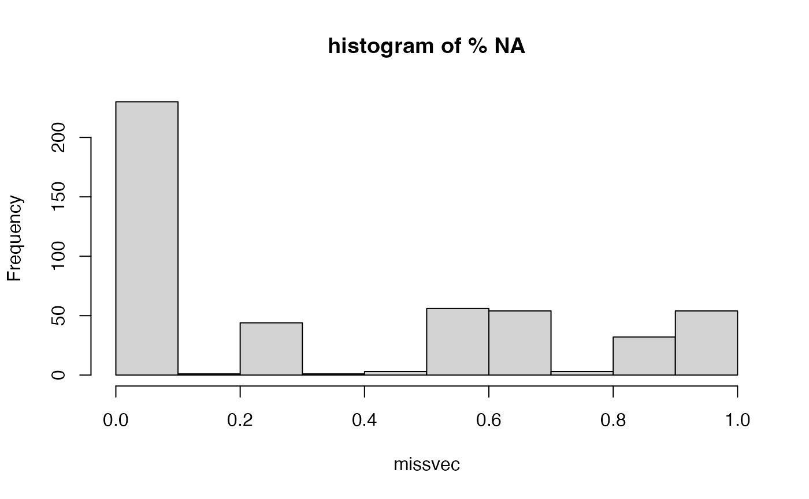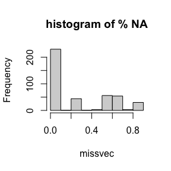
## character(0)Define the categories of data so that these can be used to identify a low-dimensional representation based on the SiMLR objective.
####################################
if ( TRUE ) {
fdatanum = convert_to_numeric_matrix( fdata )
tarcols = colnames(fdatanum)
grepper =multigrep( c("_NA","limit"),tarcols)
fdatanum = fdatanum[ , -grepper]
tarcols=tarcols[-grepper]
fdatanum = data.frame( (fdatanum))
colnames(fdatanum)=tarcols
}
colcats=rep("Basic",ncol(fdatanum))
colcats[ colnames(fdatanum) %in% c("ridageyr",
getNamesFromDataframe("riagendr",fdatanum),
getNamesFromDataframe("race",fdatanum),
"dmdeduc2","INDFMPIR") ]='demog'
bpname=getNamesFromDataframe( "BPX",fdatanum)
bmname=getNamesFromDataframe( "BMX",fdatanum)
colcats[ colnames(fdatanum) %in% c(bmname,bpname,"Testosterone","TotChol","Diabetes" ) ]='physical'
colcats[ colnames(fdatanum) %in% c(
getNamesFromDataframe( "DPQ", fdatanum ),
getNamesFromDataframe( "SLQ", fdatanum ) ) ]='mentalhealth'
x=c('LC','.x','.y','URDUMMAL','LBXVDE','LBX4CE')
colcats[ colnames(fdatanum) %in% getNamesFromDataframe( "LBX", fdatanum, exclusions=x ) ]='exposures'
colcats[ colnames(fdatanum) %in% getNamesFromDataframe( "LBD", fdatanum, exclusions=x ) ]='exposures'
colcats[ colnames(fdatanum) %in% getNamesFromDataframe( "URX", fdatanum, exclusions=x ) ]='exposures'
colcats[ colnames(fdatanum) %in% getNamesFromDataframe( "URD", fdatanum, exclusions=x ) ]='exposures'
colcats[ colnames(fdatanum) %in% getNamesFromDataframe( "LBC", fdatanum, exclusions=x ) ]='exposures'
colcats[ colnames(fdatanum) %in% getNamesFromDataframe( "DR1T", fdatanum, exclusions='DR1TWS' ) ]='diet'
# colcats[ colnames(fdatanum) %in% getNamesFromDataframe( "cfd", fdatanum )[-1] ]='digitspan'
tbl=table(colcats)
for ( nm in names(tbl)) {
expmiss=colSums(is.na(fdatanum[ ,colcats == nm ]) )
colcats[ colnames(fdatanum) %in% names(expmiss)[ expmiss > 800 ] ] = 'Basic'
}
tbl=table(colcats)
##############
nh_list=list()
knm=names(tbl)[-c(1)]
mycc = complete.cases( fdatanum[ , colcats %in% 'demog' ])
# mycc = !is.na(fdata$LBXTHG) # complete.cases( fdatanum[ , colcats %in% 'exposures' ])
table(mycc)## mycc
## FALSE TRUE
## 210 2387
doimp=TRUE
for ( k in knm ) {
print(k)
temp0=(fdatanum[mycc,colcats==k])
temp = data.frame(convert_to_numeric_matrix( temp0 ))
vv=apply( temp, 2, FUN=var, na.rm=T )
temp = temp[ , vv > 0 ]
if ( k %in% c('exposures','diet') | TRUE ) {
nn = colnames(temp)
for ( jj in 1:ncol(temp) ) { # temp = truncatehi(temp, nn[jj], t = 50, removeit = FALSE)
temp[ , nn[jj] ] = sqrt(temp[ , nn[jj] ]-min(temp[ , nn[jj] ],na.rm=T))
}
colnames(temp) = nn
temp = remove_perfectly_correlated( data.frame( temp ), tolerance=0.01 )
vv=apply( temp, 2, FUN=var, na.rm=T )
temp = temp[ , vv > 0 ]
}
for ( j in 1:ncol(temp) ) {
# hist( temp[,j], main=colnames(temp)[j])
# Sys.sleep(1)
}
nh_list[[length(nh_list)+1]]=data.matrix( ( temp ) )
print(colnames(nh_list[[length(nh_list)]]))
# nh_list[[length(nh_list)]]=impute_and_report_na(nh_list[[length(nh_list)]] )
}## [1] "demog"
## [1] "ridageyr" "dmdeduc2" "INDFMPIR" "riagendr_1" "race_1"
## [6] "race_2" "race_3" "race_4"
## [1] "diet"
## [1] "DR1TNUMF" "DR1TKCAL" "DR1TPROT" "DR1TCARB" "DR1TSUGR" "DR1TFIBE"
## [7] "DR1TTFAT" "DR1TSFAT" "DR1TMFAT" "DR1TPFAT" "DR1TCHOL" "DR1TATOC"
## [13] "DR1TATOA" "DR1TRET" "DR1TVARA" "DR1TACAR" "DR1TBCAR" "DR1TCRYP"
## [19] "DR1TLYCO" "DR1TLZ" "DR1TVB1" "DR1TVB2" "DR1TNIAC" "DR1TVB6"
## [25] "DR1TFOLA" "DR1TFA" "DR1TFF" "DR1TFDFE" "DR1TCHL" "DR1TVB12"
## [31] "DR1TB12A" "DR1TVC" "DR1TVD" "DR1TVK" "DR1TCALC" "DR1TPHOS"
## [37] "DR1TMAGN" "DR1TIRON" "DR1TZINC" "DR1TCOPP" "DR1TSODI" "DR1TPOTA"
## [43] "DR1TSELE" "DR1TCAFF" "DR1TTHEO" "DR1TALCO" "DR1TMOIS" "DR1TS040"
## [49] "DR1TS060" "DR1TS080" "DR1TS100" "DR1TS120" "DR1TS140" "DR1TS160"
## [55] "DR1TS180" "DR1TM161" "DR1TM201" "DR1TM221" "DR1TP183" "DR1TP184"
## [61] "DR1TP204" "DR1TP205" "DR1TP225" "DR1TP226"
## [1] "exposures"
## [1] "LBXBPB" "LBXBCD" "LBXTHG" "LBXBSE" "LBXBMN" "LBXIHG" "LBXBGE" "LBXBGM"
## [1] "mentalhealth"
## [1] "DPQ010" "DPQ020" "DPQ030" "DPQ040" "DPQ050" "DPQ060" "DPQ070" "DPQ080"
## [9] "DPQ090" "SLQ050" "SLQ060"
## [1] "physical"
## [1] "BPXPLS" "BPXML1" "BPXSY1" "BPXDI1"
## [5] "BPXSY2" "BPXDI2" "BPXSY3" "BPXDI3"
## [9] "BMXWT" "BMXHT" "BMXBMI" "BMXLEG"
## [13] "BMXARML" "BMXARMC" "BMXWAIST" "BMXSAD1"
## [17] "BPXPULS_Regular" "BPXPTY_Radial"
names(nh_list)=knm
#####Run the methods using reasonable defaults as recommended by prior work.
################################################################################
# regs <- regularizeSimlr(nh_list,fraction=0.15,sigma=rep(1.0,length(nh_list)))
#
regs=list()
wdemog=which( knm == 'demog')
for ( wdemog in 1:length(nh_list) ) {
nh_list[[wdemog]]=antsrimpute( nh_list[[wdemog]] )
regs[[ wdemog]]=diag( ncol(nh_list[[wdemog]]))
}
# regs = regularizeSimlr(nh_list)
names( regs ) = knm[ -1 ]
initu=initializeSimlr( nh_list, k=round(max_columns_list(nh_list)), jointReduction=TRUE )
initu=initializeSimlr( nh_list, k=round(max_columns_list(nh_list)*0.8), jointReduction=TRUE )
########################### ###########################
if ( ! exists("resultNH") ) {
mysigns = rep("positive",length(nh_list))
mysigns[ (knm) %in% c('exposures','diet') ]='either'
params = list( list() )
params[[1]][[1]] = c('cca','pca')
params[[1]][[2]] = c('centerAndScale','np')
params[[2]]=list()
params[[2]][[1]] = c('regression','ica')
params[[2]][[2]] = c('whiten','np')
pindex = 2
resultNH <- simlr( nh_list,
iterations=100,
sparsenessQuantiles=rep(0.5,length(nh_list)),
positivities=mysigns,
energyType=params[[pindex]][[1]][1], mixAlg=params[[pindex]][[1]][2],
scale=params[[pindex]][[2]],
constraint="Stiefelx10x10",
randomSeed=99,
initialUMatrix=initu, verbose=T )
}## [1] "Stiefel" "10" "10"
## [1] " <0> BUILD-V <0> BUILD-V <0> BUILD-V <0> BUILD-V <0> "
## [1] "initialDataTerm: 2.71020797188974 <o> mixer: ica <o> E: regression"
## [1] "Iteration: 1 bestEv: 11.9935692039907 bestIt: 1 CE: 11.9935692039907 featOrth: 0.127772743147944"
## [1] "Iteration: 2 bestEv: 1.63986172874373 bestIt: 2 CE: 1.63986172874373 featOrth: 0.103912739937169"
## [1] "Iteration: 3 bestEv: 0.965356711163832 bestIt: 3 CE: 0.965356711163832 featOrth: 0.0931254867177344"
## [1] "Iteration: 4 bestEv: 0.888954416336653 bestIt: 4 CE: 0.888954416336653 featOrth: 0.0892884076783108"
## [1] "Iteration: 5 bestEv: 0.870325847048973 bestIt: 5 CE: 0.870325847048973 featOrth: 0.0870346161218532"
## [1] "Iteration: 6 bestEv: 0.825000374227063 bestIt: 6 CE: 0.825000374227063 featOrth: 0.0826346778383063"
## [1] "Iteration: 7 bestEv: 0.693047419244424 bestIt: 7 CE: 0.693047419244424 featOrth: 0.0692126932977422"
## [1] "Iteration: 8 bestEv: 0.693047419244424 bestIt: 7 CE: 0.913749417618968 featOrth: 0.0687079726732635"
## [1] "Iteration: 9 bestEv: 0.693047419244424 bestIt: 7 CE: 0.80799295195613 featOrth: 0.0667889966914588"
## [1] "Iteration: 10 bestEv: 0.665209691854451 bestIt: 10 CE: 0.665209691854451 featOrth: 0.0663889270275271"
## [1] "Iteration: 11 bestEv: 0.665209691854451 bestIt: 10 CE: 0.793431315683012 featOrth: 0.0655793224156168"
## [1] "Iteration: 12 bestEv: 0.634167245559621 bestIt: 12 CE: 0.634167245559621 featOrth: 0.0635194776700486"
## [1] "Iteration: 13 bestEv: 0.620888182613552 bestIt: 13 CE: 0.620888182613552 featOrth: 0.062066453537709"
## [1] "Iteration: 14 bestEv: 0.6096107364349 bestIt: 14 CE: 0.6096107364349 featOrth: 0.0609236402130791"
## [1] "Iteration: 15 bestEv: 0.595442889630652 bestIt: 15 CE: 0.595442889630652 featOrth: 0.0593091067869315"
## [1] "Iteration: 16 bestEv: 0.577946722705794 bestIt: 16 CE: 0.577946722705793 featOrth: 0.0576933714653939"
## [1] "Iteration: 17 bestEv: 0.571402078391595 bestIt: 17 CE: 0.571402078391595 featOrth: 0.0572490849972004"
## [1] "Iteration: 18 bestEv: 0.541863341618253 bestIt: 18 CE: 0.541863341618253 featOrth: 0.054334570724129"
## [1] "Iteration: 19 bestEv: 0.535451267426237 bestIt: 19 CE: 0.535451267426237 featOrth: 0.0532292456669716"
## [1] "Iteration: 20 bestEv: 0.518391263944661 bestIt: 20 CE: 0.518391263944661 featOrth: 0.0518258835574758"
## [1] "Iteration: 21 bestEv: 0.518391263944661 bestIt: 20 CE: 0.520067200973396 featOrth: 0.0518152057596057"
## [1] "Iteration: 22 bestEv: 0.515448663518788 bestIt: 22 CE: 0.515448663518788 featOrth: 0.0513236402064409"
## [1] "Iteration: 23 bestEv: 0.512142939104632 bestIt: 23 CE: 0.512142939104632 featOrth: 0.0510932486182008"
## [1] "Iteration: 24 bestEv: 0.50420447114908 bestIt: 24 CE: 0.50420447114908 featOrth: 0.0503298856104212"
## [1] "Iteration: 25 bestEv: 0.501651140465264 bestIt: 25 CE: 0.501651140465264 featOrth: 0.050166495519882"
## [1] "Iteration: 26 bestEv: 0.501651140465264 bestIt: 25 CE: 0.639967466789289 featOrth: 0.0500925259468789"
## [1] "Iteration: 27 bestEv: 0.50067848783321 bestIt: 27 CE: 0.50067848783321 featOrth: 0.0500726705549758"
## [1] "Iteration: 28 bestEv: 0.487779124216728 bestIt: 28 CE: 0.487779124216728 featOrth: 0.04862778514325"
## [1] "Iteration: 29 bestEv: 0.443079833904369 bestIt: 29 CE: 0.443079833904369 featOrth: 0.0442397922184025"
## [1] "Iteration: 30 bestEv: 0.428947929952196 bestIt: 30 CE: 0.428947929952196 featOrth: 0.0429651965613985"
## [1] "Iteration: 31 bestEv: 0.426754903954766 bestIt: 31 CE: 0.426754903954766 featOrth: 0.0426286121799032"
## [1] "Iteration: 32 bestEv: 0.367859876803134 bestIt: 32 CE: 0.367859876803134 featOrth: 0.0366586388984767"
## [1] "Iteration: 33 bestEv: 0.358340622276047 bestIt: 33 CE: 0.358340622276047 featOrth: 0.0357033480678789"
## [1] "Iteration: 34 bestEv: 0.351876294473785 bestIt: 34 CE: 0.351876294473785 featOrth: 0.0351460102557289"
## [1] "Iteration: 35 bestEv: 0.344701915984941 bestIt: 35 CE: 0.344701915984941 featOrth: 0.0342216877785652"
## [1] "Iteration: 36 bestEv: 0.342329479847354 bestIt: 36 CE: 0.342329479847354 featOrth: 0.0342017352538828"
## [1] "Iteration: 37 bestEv: 0.292809803833917 bestIt: 37 CE: 0.292809803833917 featOrth: 0.0292608804270109"
## [1] "Iteration: 38 bestEv: 0.291857642373701 bestIt: 38 CE: 0.291857642373701 featOrth: 0.029111797984013"
## [1] "Iteration: 39 bestEv: 0.27443316363898 bestIt: 39 CE: 0.27443316363898 featOrth: 0.0274324975061715"
## [1] "Iteration: 40 bestEv: 0.274424740053844 bestIt: 40 CE: 0.274424740053844 featOrth: 0.0274324975091159"
## [1] "Iteration: 41 bestEv: 0.253831348063335 bestIt: 41 CE: 0.253831348063335 featOrth: 0.0253581616702929"
## [1] "Iteration: 42 bestEv: 0.249307466663937 bestIt: 42 CE: 0.249307466663937 featOrth: 0.0249066326620324"
## [1] "Iteration: 43 bestEv: 0.249298312381587 bestIt: 43 CE: 0.249298312381587 featOrth: 0.0249066326783903"
## [1] "Iteration: 44 bestEv: 0.244300833659568 bestIt: 44 CE: 0.244300833659568 featOrth: 0.0243767504662566"
## [1] "Iteration: 45 bestEv: 0.244300833659568 bestIt: 44 CE: 0.382898628652233 featOrth: 0.0243671029923175"
## [1] "Iteration: 46 bestEv: 0.244300833659568 bestIt: 44 CE: 0.382828162137128 featOrth: 0.0243571675247792"
## [1] "Iteration: 47 bestEv: 0.244091295487538 bestIt: 47 CE: 0.244091295487538 featOrth: 0.0243563764893334"
## [1] "Iteration: 48 bestEv: 0.244091295487538 bestIt: 47 CE: 0.353165629679563 featOrth: 0.0214068898908113"
## [1] "Iteration: 49 bestEv: 0.211539906421047 bestIt: 49 CE: 0.211539906421047 featOrth: 0.0210772630332334"
## [1] "Iteration: 50 bestEv: 0.205016657515942 bestIt: 50 CE: 0.205016657515942 featOrth: 0.0204638561971728"
## [1] "Iteration: 51 bestEv: 0.193449667874766 bestIt: 51 CE: 0.193449667874766 featOrth: 0.0193027856040291"
## [1] "Iteration: 52 bestEv: 0.166509460823367 bestIt: 52 CE: 0.166509460823367 featOrth: 0.0168024932895878"
## [1] "Iteration: 53 bestEv: 0.166509460823367 bestIt: 52 CE: 0.16651166147952 featOrth: 0.0168024001641276"
## [1] "Iteration: 54 bestEv: 0.159138236127841 bestIt: 54 CE: 0.159138236127841 featOrth: 0.0158953340224972"
## [1] "Iteration: 55 bestEv: 0.148692536645915 bestIt: 55 CE: 0.148692536645915 featOrth: 0.0148989786537554"
## [1] "Iteration: 56 bestEv: 0.133419407092261 bestIt: 56 CE: 0.133419407092261 featOrth: 0.0133552764857646"
## [1] "Iteration: 57 bestEv: 0.133419407092261 bestIt: 56 CE: 0.260971310879684 featOrth: 0.0123377405042708"
## [1] "Iteration: 58 bestEv: 0.133419407092261 bestIt: 56 CE: 0.260958910710326 featOrth: 0.0123362979956149"
## [1] "Iteration: 59 bestEv: 0.122169009737943 bestIt: 59 CE: 0.122169009737943 featOrth: 0.0123309576409961"
## [1] "Iteration: 60 bestEv: 0.12215840535691 bestIt: 60 CE: 0.12215840535691 featOrth: 0.0123300025963331"
## [1] "Iteration: 61 bestEv: 0.122153004259808 bestIt: 61 CE: 0.122153004259808 featOrth: 0.0123300025886837"
## [1] "Iteration: 62 bestEv: 0.109803062518839 bestIt: 62 CE: 0.109803062518839 featOrth: 0.0111087827743146"
## [1] "Iteration: 63 bestEv: 0.103559308842414 bestIt: 63 CE: 0.103559308842414 featOrth: 0.0103483911313693"
## [1] "Iteration: 64 bestEv: 0.0996629117059099 bestIt: 64 CE: 0.0996629117059099 featOrth: 0.00991209925994193"
## [1] "Iteration: 65 bestEv: 0.099642586543602 bestIt: 65 CE: 0.099642586543602 featOrth: 0.00991020831823585"
## [1] "Iteration: 66 bestEv: 0.099642586543602 bestIt: 65 CE: 0.099642586543602 featOrth: 0.00991020831823585"
## [1] "Iteration: 67 bestEv: 0.099642586543602 bestIt: 65 CE: 0.099642586543602 featOrth: 0.00991020831823585"
## [1] "Iteration: 68 bestEv: 0.099642586543602 bestIt: 65 CE: 0.099642586543602 featOrth: 0.00991020831823585"
## [1] "Iteration: 69 bestEv: 0.099642586543602 bestIt: 65 CE: 0.099642586543602 featOrth: 0.00991020831823585"
## [1] "Iteration: 70 bestEv: 0.099642586543602 bestIt: 65 CE: 0.099642586543602 featOrth: 0.00991020831823585"
## [1] "Iteration: 71 bestEv: 0.099642586543602 bestIt: 65 CE: 0.099642586543602 featOrth: 0.00991020831823585"
#####################################################
# #
# # #
# #
#####################################################
# #
# #
#####################################################Apply the learned representations to the data matrices.
# drwwrd
projlist=list()
mysimk=ncol(initu)
for ( k in 1:length(nh_list)) rownames(resultNH$v[[k]])=colnames(nh_list[[k]])
simdf2=data.frame(fdatanum)
simdf2=apply_simlr_matrices( simdf2, resultNH$v, n_limit=ncol(initu), robust=FALSE, center=TRUE,
scale=TRUE, absolute_value=mysigns=='positive', verbose=FALSE )
newnames=simdf2[[2]]
simdf2=simdf2[[1]]
cognames = c(
"z_cerad_re", "z_animal_re", "z_delayed_re", "z_global_re", "z_digit_re"
# "z_cerad_age", "z_animal_age", "z_digit_age", "z_delayed_age", "z_global_age",
# "z_cerad_edu", "z_animal_edu", "z_digit_edu", "z_delayed_edu", "z_global_edu"
)
# cognames=c("cerad_sum","cfdast","cfdds")
dnames = c( "riagendr", "ridageyr", "race", "dmdeduc2", "INDFMPIR",'wtint2yr','wtmec2yr')
simdf2 = data.frame(simdf2)
simdf2[,dnames]=fdata[,dnames]
simdf2[,cognames]=fdata[,cognames]
sep='PC'
tocomp = c("dietPC1","mentalhealthPC1",'physicalPC1')
mycc2 = complete.cases( simdf2[,tocomp] )
simdf2=simdf2[mycc2,]
simdf2[,newnames]=scale(simdf2[,newnames],T,T)
for ( n in 'exposures' ) {
for ( v in 1:mysimk ) {
thiscol=paste0(n,sep,v)
if ( any( is.na( simdf2[,thiscol] ) )) {
# simdf2 = simlr_impute( data.frame(simdf2), knm, v, n, separator=sep )
# simdf2[,thiscol]=antsrimpute(simdf2[,thiscol])
}
}
}
thesena=is.na(simdf2)
nn=colnames(simdf2)
# simdf2 = data.frame( robustMatrixTransform(simdf2))
colnames(simdf2)=nn
simdf2[thesena]=NA
##################################
# Function to search NHANES variable descriptions
search_nhanes_var <- function(var_name_in, dtname) {
# Search for the variable name (case insensitive)
var_name_in=gsub( "DR1T" , "DRXT" , var_name_in)
result <- unique(subset(nhanes_dict, grepl(var_name_in, nhanes_dict$variable_codename_use, ignore.case = TRUE))$variable_description_use)
# Return the first match if available
if (length(result) > 0) {
return(result[1])
} else {
return("Variable not found.")
}
}
covars=" ~ riagendr + ridageyr + dmdeduc2 +" # race adjusted scores
covars=" ~ 1 +" # race adjusted scores
covars=" ~ riagendr + ridageyr + dmdeduc2 + INDFMPIR + "
basep=1e-4
# rooter
if ( ! exists("cogind" ) ) cogind = length(cognames)
#############################
pnames=knm[-1]
nsig=0
for ( kk in 1:ncol(initu)) {
bform = paste0( cognames[cogind], covars, "1" )
myform = paste0( cognames[cogind], covars,paste0( paste0(pnames,sep,kk), collapse='+'))
tempdf = simdf2
for ( qq in knm ) {
tt=paste0(qq,sep,kk)
tempdf[ , tt]=psych::winsor( sqrt(tempdf[ , tt] - min(tempdf[ , tt],na.rm=T)), 0.005 )
}
mdl = lm( myform, data=tempdf )
bmdl = lm( bform, data=tempdf[names(predict(mdl)),] )
# if (doimp) mdl = lm( myform, data=tempdf, weights=tempdf$wtint2yr ) else mdl = lm( myform, data=tempdf, weights=tempdf$wtint2yr )
myanv = anova( bmdl, mdl )
if ( myanv$Pr[2] < basep/mysimk ) {
cat("*** result begin ***********************************\n")
print("individual coefficients")
tailcoffs = tail( coefficients( summary( mdl ) ), 4 )
print( tailcoffs )
print( paste("multivar-ANOVA p-value", insight::format_p(myanv$Pr[2],digits=4) ) )
print( cognames[cogind])
gglist=list()
simpreds = c()
simwts = c()
for ( k in pnames ) {
print( paste("Simlr weights", k ) )
ivec = interpret_simlr_vector2( resultNH$v[[k]], kk, n2show=3, shortnames=F )
print( ivec )
print( search_nhanes_var( names(ivec)[1] ) )
print( search_nhanes_var( names(ivec)[2] ) )
simpreds = c( simpreds, names(ivec)[1:2] )
simwts = c( simwts, ivec[1:2] * abs(tailcoffs[paste0(k,sep,kk),"t value"] ))
ttl = paste0(k,kk, " ", insight::format_p(tailcoffs[paste0(k,sep,kk),"Pr(>|t|)"],digits=4) )
gglist[[length(gglist)+1]]=visreg::visreg(mdl, paste0(k,sep,kk), gg=TRUE ) + ggtitle(ttl) + theme_minimal()
}
print( plot_regression_graph( simpreds, simwts, cognames[cogind], method = "ggraph") )
# sankey <- plot_regression_graph(simpreds, simwts, cognames[cogind], method = "sankey")
# saveWidget(sankey, "sankey_plot.html", selfcontained = TRUE)
# htmltools::includeHTML("sankey_plot.html")
( grid.arrange( grobs=gglist, nrow=2 ) )
nsig=nsig+1
cat("*** result end ***********************************\n\n")
# Sys.sleep(3)
}
}## *** result begin ***********************************
## [1] "individual coefficients"
## Estimate Std. Error t value Pr(>|t|)
## dietPC9 0.1874534 0.08564790 2.188651 2.878158e-02
## exposuresPC9 -0.1535241 0.05437125 -2.823627 4.813421e-03
## mentalhealthPC9 -0.1450729 0.03533386 -4.105775 4.254865e-05
## physicalPC9 0.1426533 0.06672704 2.137863 3.269503e-02
## [1] "multivar-ANOVA p-value p = 5.3249e-07"
## [1] "z_digit_re"
## [1] "Simlr weights diet"
## DR1TLZ DR1TBCAR DR1TLYCO
## 1.0000000 0.9349191 -0.5298659
## [1] "Lutein + zeaxanthin (mcg)"
## [1] "Beta-carotene (mcg)"
## [1] "Simlr weights exposures"
## LBXBCD LBXBSE LBXBMN
## 1.0000000 0.1532214 0.1296443
## [1] "Blood cadmium (ug/L)"
## [1] "Serum selenium replicate 2 (ug/L)"
## [1] "Simlr weights mentalhealth"
## DPQ080 DPQ050 SLQ060
## 1.0000000 0.6520809 0.2766467
## [1] "Moving or speaking slowly or too fast"
## [1] "Poor appetite or overeating"
## [1] "Simlr weights physical"
## BMXWT BMXWAIST BMXARMC
## 1.0000000 0.7354734 0.3632938
## [1] "Weight (kg)"
## [1] "Waist Circumference (cm)"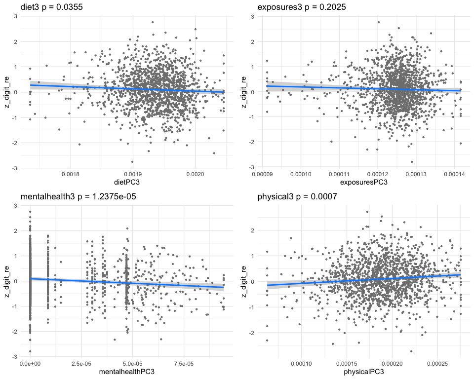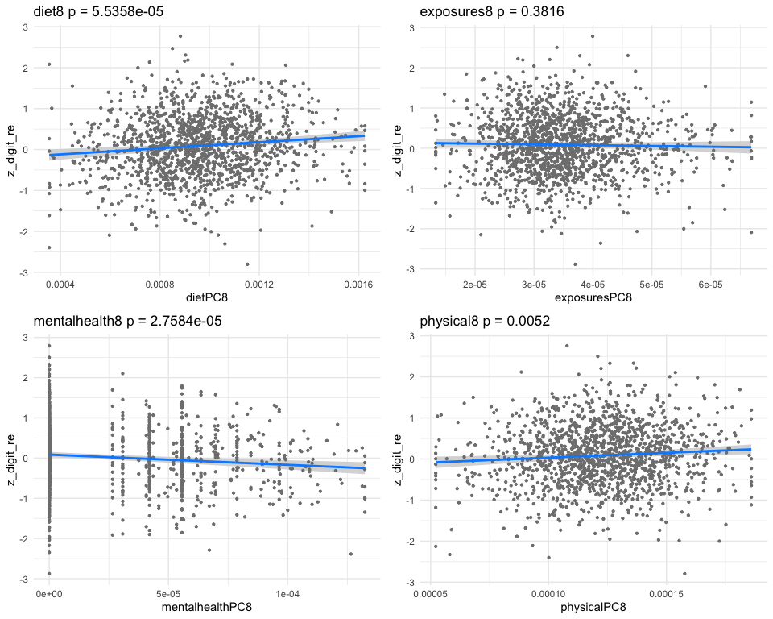
## *** result end ***********************************
##
## *** result begin ***********************************
## [1] "individual coefficients"
## Estimate Std. Error t value Pr(>|t|)
## dietPC13 0.25067235 0.11175132 2.2431264 2.503948e-02
## exposuresPC13 0.38569789 0.08491518 4.5421549 6.030778e-06
## mentalhealthPC13 -0.02838406 0.03296992 -0.8609077 3.894315e-01
## physicalPC13 0.22018487 0.08207080 2.6828649 7.382590e-03
## [1] "multivar-ANOVA p-value p = 6.6709e-07"
## [1] "z_digit_re"
## [1] "Simlr weights diet"
## DR1TACAR DR1TLYCO DR1TRET
## 1.0000000 -0.6156907 0.5462487
## [1] "Alpha-carotene (mcg)"
## [1] "Lycopene (mcg)"
## [1] "Simlr weights exposures"
## LBXBSE LBXBCD LBXBPB
## 1.00000000 -0.22090618 -0.05029142
## [1] "Serum selenium replicate 2 (ug/L)"
## [1] "Blood cadmium (ug/L)"
## [1] "Simlr weights mentalhealth"
## DPQ030 DPQ040 DPQ010
## 1.0000000 0.4771598 0.3031057
## [1] "Trouble sleeping or sleeping too much"
## [1] "Feeling tired or having little energy"
## [1] "Simlr weights physical"
## BMXWT BMXHT BMXLEG
## 1.0000000 0.9743636 0.7344650
## [1] "Weight (kg)"
## [1] "Standing Height (cm)"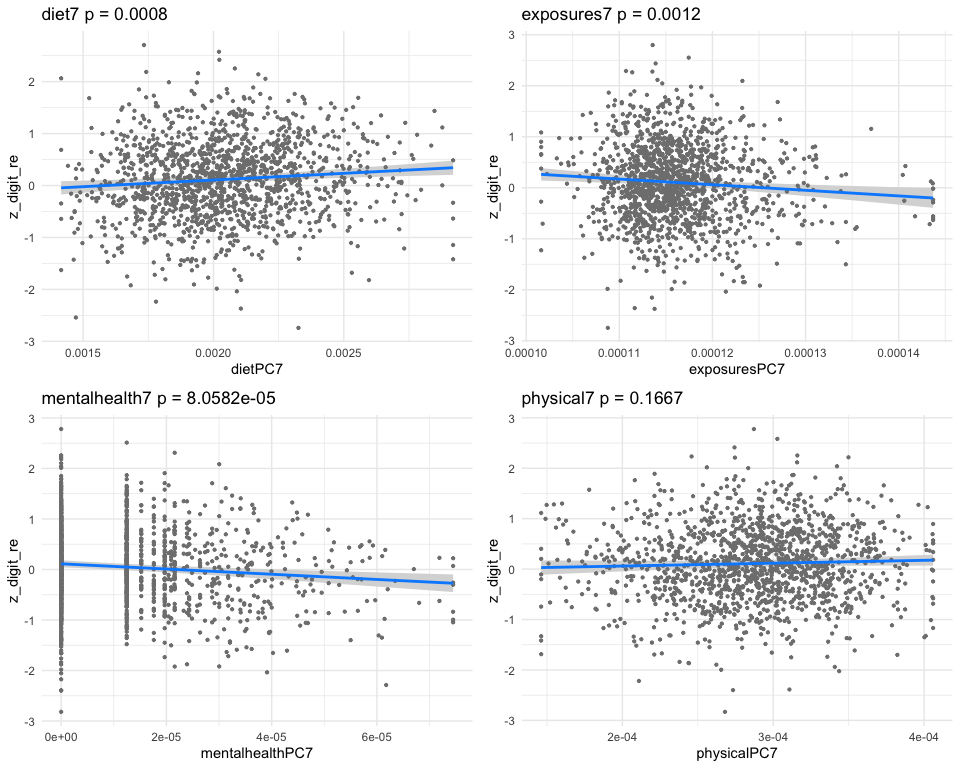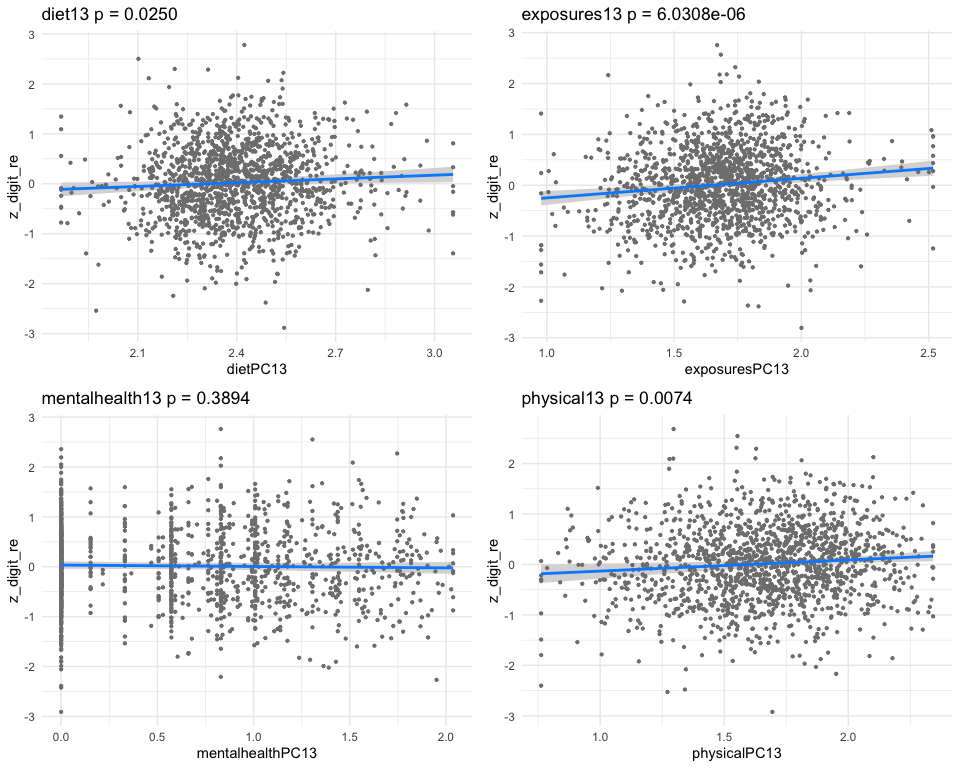
## *** result end ***********************************
##
## *** result begin ***********************************
## [1] "individual coefficients"
## Estimate Std. Error t value Pr(>|t|)
## dietPC16 0.07143196 0.10971788 0.6510512 5.151168e-01
## exposuresPC16 -0.62448171 0.19425059 -3.2148252 1.334048e-03
## mentalhealthPC16 -0.14091148 0.03609041 -3.9044018 9.880634e-05
## physicalPC16 0.25101164 0.09223950 2.7213031 6.580467e-03
## [1] "multivar-ANOVA p-value p = 1.2899e-06"
## [1] "z_digit_re"
## [1] "Simlr weights diet"
## DR1TSODI DR1TCALC DR1TVARA
## -1.0000000 0.8472620 -0.5697437
## [1] "Sodium (mg)"
## [1] "Calcium (mg)"
## [1] "Simlr weights exposures"
## LBXBSE LBXIHG LBXBMN
## -1.00000000 0.06540987 -0.01238522
## [1] "Serum selenium replicate 2 (ug/L)"
## [1] "Mercury, Inorganic (ug/L)"
## [1] "Simlr weights mentalhealth"
## DPQ060 DPQ020 DPQ080
## 1.0000000 0.6704314 0.5145766
## [1] "Feeling bad about yourself"
## [1] "Feeling down, depressed, or hopeless"
## [1] "Simlr weights physical"
## BMXHT BPXPLS BMXWT
## 1.00000000 0.06563975 0.03663393
## [1] "Standing Height (cm)"
## [1] "60 sec. pulse (30 sec. pulse * 2)" 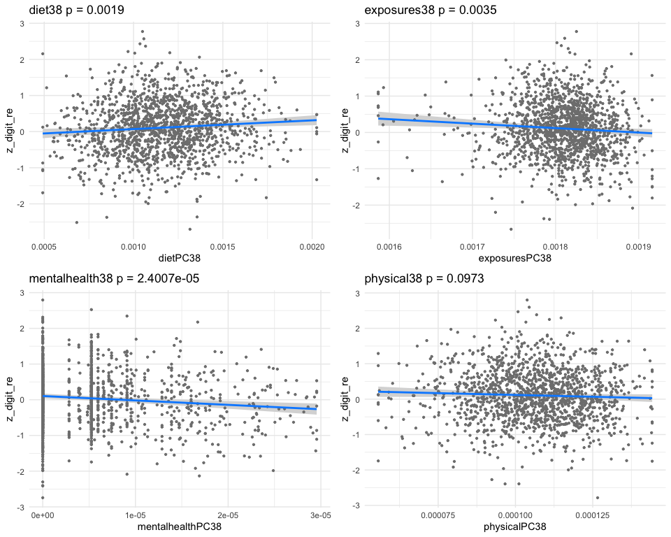
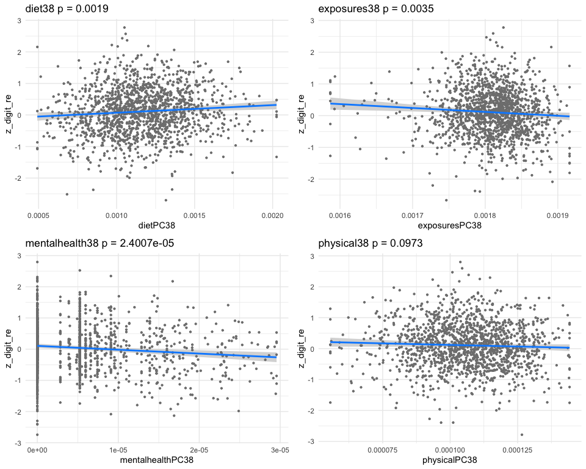
## *** result end ***********************************
##
## *** result begin ***********************************
## [1] "individual coefficients"
## Estimate Std. Error t value Pr(>|t|)
## dietPC25 0.2143130 0.06413879 3.341395 0.0008548350
## exposuresPC25 0.2623633 0.08056259 3.256639 0.0011535050
## mentalhealthPC25 -0.1322905 0.03581173 -3.694056 0.0002289228
## physicalPC25 0.1893989 0.06533179 2.899031 0.0037996306
## [1] "multivar-ANOVA p-value p = 1.2937e-08"
## [1] "z_digit_re"
## [1] "Simlr weights diet"
## DR1TSODI DR1TKCAL DR1TPOTA
## 1.0000000 0.9099852 0.7321293
## [1] "Sodium (mg)"
## [1] "Energy (kcal)"
## [1] "Simlr weights exposures"
## LBXBSE LBXBPB LBXBGM
## 1.0000000 0.2457419 0.0960980
## [1] "Serum selenium replicate 2 (ug/L)"
## [1] "Blood lead replicate 1 (ug/dL)"
## [1] "Simlr weights mentalhealth"
## DPQ050 DPQ070 DPQ010
## 1.0000000 0.6006879 0.1416374
## [1] "Poor appetite or overeating"
## [1] "Trouble concentrating on things"
## [1] "Simlr weights physical"
## BMXWT BMXWAIST BMXBMI
## 1.0000000 0.8664480 0.2383386
## [1] "Weight (kg)"
## [1] "Waist Circumference (cm)"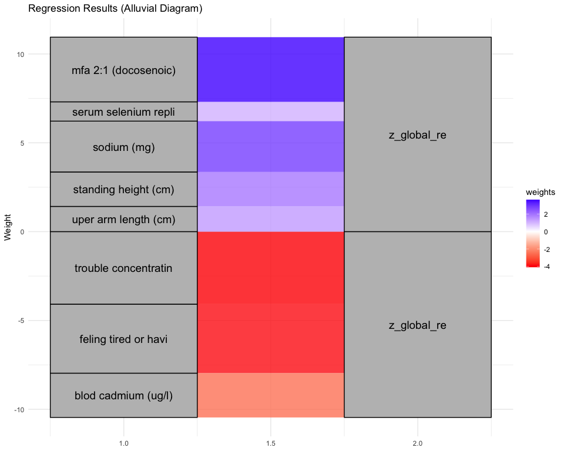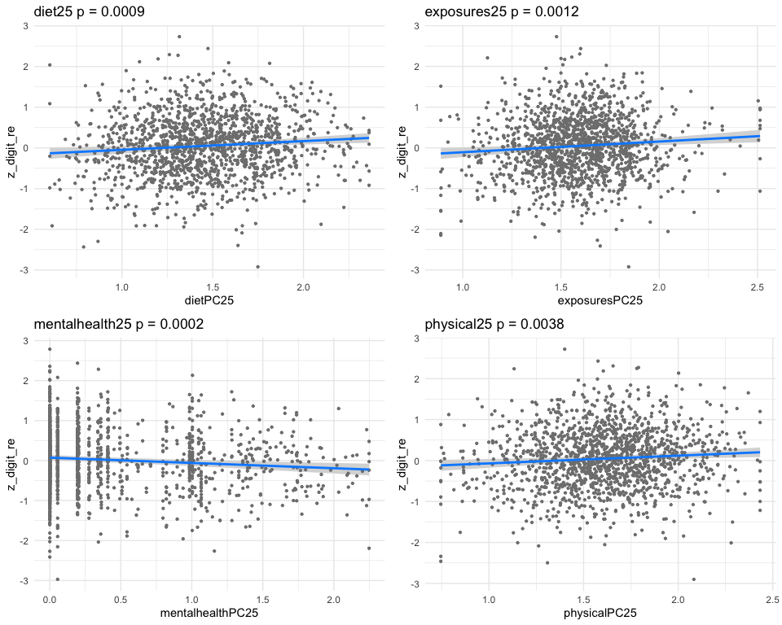
## *** result end ***********************************
##
## *** result begin ***********************************
## [1] "individual coefficients"
## Estimate Std. Error t value Pr(>|t|)
## dietPC27 -0.2017716 0.10382490 -1.943383 5.216355e-02
## exposuresPC27 -0.6964175 0.17510667 -3.977104 7.320693e-05
## mentalhealthPC27 -0.1351728 0.03385743 -3.992412 6.868515e-05
## physicalPC27 0.1522935 0.09380803 1.623460 1.047090e-01
## [1] "multivar-ANOVA p-value p = 8.5319e-08"
## [1] "z_digit_re"
## [1] "Simlr weights diet"
## DR1TLYCO DR1TSODI DR1TMOIS
## -1.0000000 -0.7350936 -0.6125158
## [1] "Lycopene (mcg)"
## [1] "Sodium (mg)"
## [1] "Simlr weights exposures"
## LBXBSE LBXBPB LBXBCD
## -1.0000000 0.3683468 0.3237641
## [1] "Serum selenium replicate 2 (ug/L)"
## [1] "Blood lead replicate 1 (ug/dL)"
## [1] "Simlr weights mentalhealth"
## DPQ010 DPQ070 DPQ050
## 1.0000000 0.3480401 0.1101696
## [1] "Little interest in doing things"
## [1] "Trouble concentrating on things"
## [1] "Simlr weights physical"
## BMXHT BMXARML BPXSY2
## 1.0000000 0.8410460 0.2003101
## [1] "Standing Height (cm)"
## [1] "Upper Arm Length (cm)"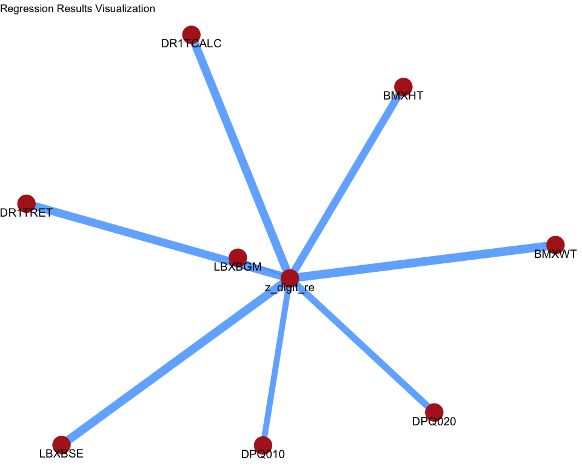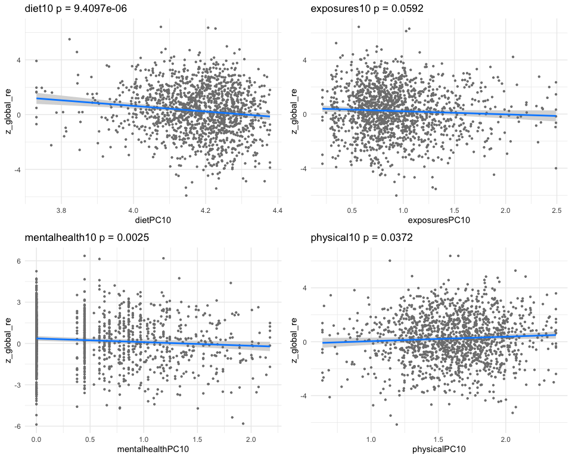
## *** result end ***********************************
##
## *** result begin ***********************************
## [1] "individual coefficients"
## Estimate Std. Error t value Pr(>|t|)
## dietPC38 0.2087369 0.06709997 3.110835 1.902044e-03
## exposuresPC38 -0.5678278 0.19433437 -2.921911 3.532899e-03
## mentalhealthPC38 -0.1557716 0.03675828 -4.237727 2.400715e-05
## physicalPC38 -0.1194990 0.07202305 -1.659177 9.729686e-02
## [1] "multivar-ANOVA p-value p = 1.9180e-08"
## [1] "z_digit_re"
## [1] "Simlr weights diet"
## DR1TLZ DR1TBCAR DR1TSODI
## 1.0000000 0.8801335 0.6660599
## [1] "Lutein + zeaxanthin (mcg)"
## [1] "Beta-carotene (mcg)"
## [1] "Simlr weights exposures"
## LBXBSE LBXBGM LBXTHG
## -1.000000000 0.005455579 0.005002908
## [1] "Serum selenium replicate 2 (ug/L)"
## [1] "Methylmercury (ug/L)"
## [1] "Simlr weights mentalhealth"
## DPQ070 DPQ080 DPQ040
## 1.0000000 0.4868629 0.2380073
## [1] "Trouble concentrating on things"
## [1] "Moving or speaking slowly or too fast"
## [1] "Simlr weights physical"
## BPXSY1 BMXARML BPXML1
## 1.0000000 0.7278574 0.5567605
## [1] "Systolic: Blood pressure (first reading) mm Hg"
## [1] "Upper Arm Length (cm)"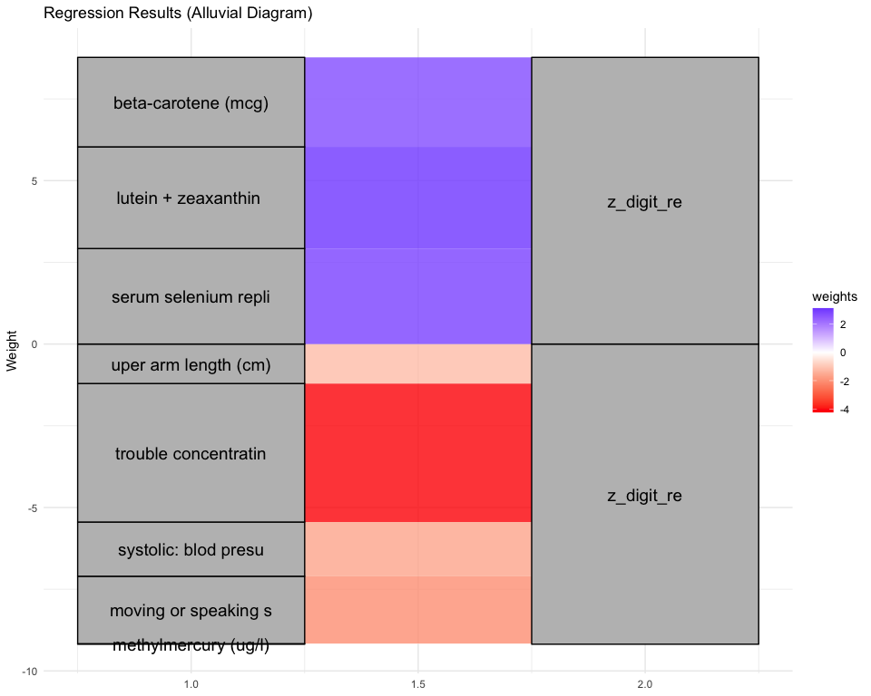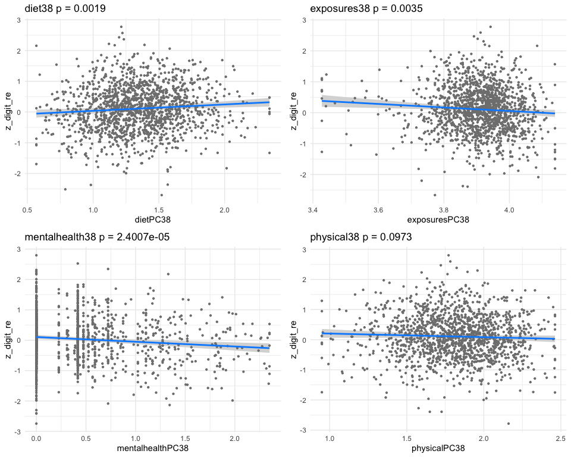
## *** result end ***********************************
##
## *** result begin ***********************************
## [1] "individual coefficients"
## Estimate Std. Error t value Pr(>|t|)
## dietPC46 0.3237258 0.09623659 3.363853 0.0007887153
## exposuresPC46 0.2527942 0.09474389 2.668185 0.0077113925
## mentalhealthPC46 -0.1144780 0.03617298 -3.164738 0.0015845437
## physicalPC46 0.2043945 0.08466063 2.414280 0.0158897592
## [1] "multivar-ANOVA p-value p = 1.5039e-07"
## [1] "z_digit_re"
## [1] "Simlr weights diet"
## DR1TSODI DR1TLZ DR1TPOTA
## 1.0000000 0.6448342 0.6011317
## [1] "Sodium (mg)"
## [1] "Lutein + zeaxanthin (mcg)"
## [1] "Simlr weights exposures"
## LBXBGM LBXBCD LBXIHG
## -1.0000000 -0.7490812 0.5251282
## [1] "Methylmercury (ug/L)"
## [1] "Blood cadmium (ug/L)"
## [1] "Simlr weights mentalhealth"
## DPQ060 DPQ020 DPQ070
## 1.0000000 0.7285402 0.5864920
## [1] "Feeling bad about yourself"
## [1] "Feeling down, depressed, or hopeless"
## [1] "Simlr weights physical"
## BMXHT BMXWT BMXLEG
## 1.0000000 0.7472541 0.2897585
## [1] "Standing Height (cm)"
## [1] "Weight (kg)"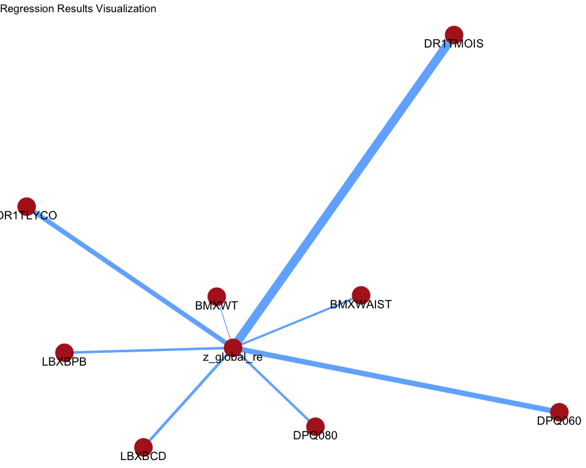
## *** result end ***********************************
print(nsig)## [1] 7
##########################################################################################
##########################################################################################
# https://wwwn.cdc.gov/nchs/nhanes/search/default.aspx
# > interpret_simlr_vector2( resultNH$v[['exposures']], 1, n2show=5, shortnames=F )
# LBXVBZ LBXVOX LBXVFN LBX2DF
# benzene, Xylene, furan, Dimethylfuran
# 1.0000000 0.3346728 0.1868323 0.0586727
##########################################################################################